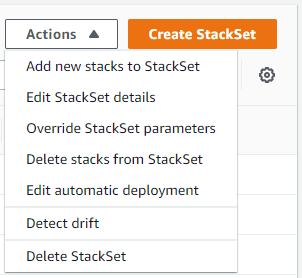
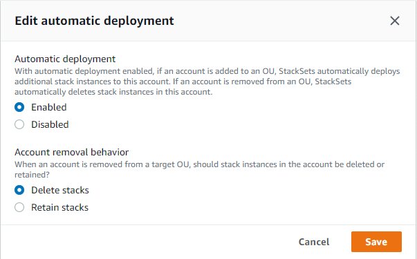

서비스 관리형 권한을 사용하여 스택 세트에 대한 자동 배포 관리
자동 배포를 활성화한 경우 StackSets는 나중에 대상 조직 또는 조직 단위(OU)에 추가되는 계정에 자동으로 배포합니다. 스택 보관을 활성화한 경우 대상 OU에서 계정을 제거해도 계정의 스택 리소스는 유지됩니다. 스택 세트를 만들 때 지정한 자동 배포 설정은 언제든 조정할 수 있습니다.
참고
재정의된 파라미터 값은 현재 대상 OU와 해당 하위 OU에 있는 계정에만 적용됩니다. 나중에 대상 OU와 해당 하위 OU에 추가되는 계정은 재정의된 값이 아닌 스택 세트 기본값을 사용합니다.
AWS CloudFormation 콘솔을 사용하여 자동 배포 관리
-
https://console.aws.amazon.com/cloudformation.
에서 AWS CloudFormation 콘솔 열기 -
탐색 창에서 스택 세트를 선택합니다.
-
서비스 관리형 권한으로 스택 세트 생성에서 생성한 스택 세트를 스택 세트 페이지에서 선택합니다.
-
스택 세트를 선택한 상태로 Actions(작업) 메뉴에서 Edit automatic deployment(자동 배포 편집)를 선택합니다. 자동 배포는 스택 세트 수준에서 설정됩니다. OU, 계정 또는 리전의 경우 자동 배포를 선택적으로 조정할 수 없습니다.
 -
자동 배포 편집 모달 에서 자동 배포 및 계정 제거 동작 설정을 관리합니다.
참고
스택 보관을 선택하면 스택 인스턴스가 스택 세트에서 제거되지만 스택 및 관련 리소스는 유지됩니다. 리소스는 현재 상태로 유지되지만 더 이상 스택 세트의 일부가 아닙니다.
-
저장을 선택합니다.
AWS CLI를 사용하여 자동 배포 관리
-
AWS CLI을 엽니다.
-
서비스 관리형 권한으로 스택 세트 생성에서 생성한 스택 세트를 지정하여
update-stack-set명령을 실행합니다. 자동 배포는 스택 세트 수준에서 설정됩니다. 스택 세트 업데이트에 --auto-deployment를 지정하면 --deployment-targets 또는 --regions를 지정할 수 없습니다.aws cloudformation update-stack-set --stack-set-nameStackSet_myApp--auto-deployment Enabled=false -
2단계에서
update-stack-set출력의 일부로 반환된operation-id를 사용해describe-stack-set-operation을 실행하여 스택 세트가 성공적으로 업데이트되었는지 확인합니다.aws cloudformation describe-stack-set-operation --operation-idoperation_ID
자동 배포 예
자동 배포를 활성화하면, 계정이 대상 조직 또는 OU에 추가되거나 대상 조직 또는 OU에서 제거되거나 대상 OU 간에 이동될 때 이 기능이 트리거됩니다.
예를 들어 스택 세트 StackSet1은 us-east-1 리전에서 OU OU1를 대상으로 합니다. 스택 세트 StackSet2는 us-east-1 리전에서 OU OU2를 대상으로 합니다. OU1에는 AccountA 계정이 포함되어 있습니다.
자동 배포가 활성화된 상태에서 AccountA를 OU1에서 OU2로 이동하면 StackSets가 자동으로 삭제 작업을 실행하여 AccountA에서 StackSet1 인스턴스를 제거하고, AccountA에 StackSet2 인스턴스를 추가하는 생성 작업을 대기열에 추가합니다.